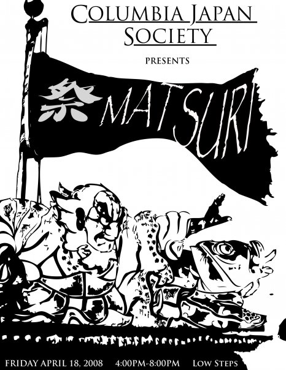
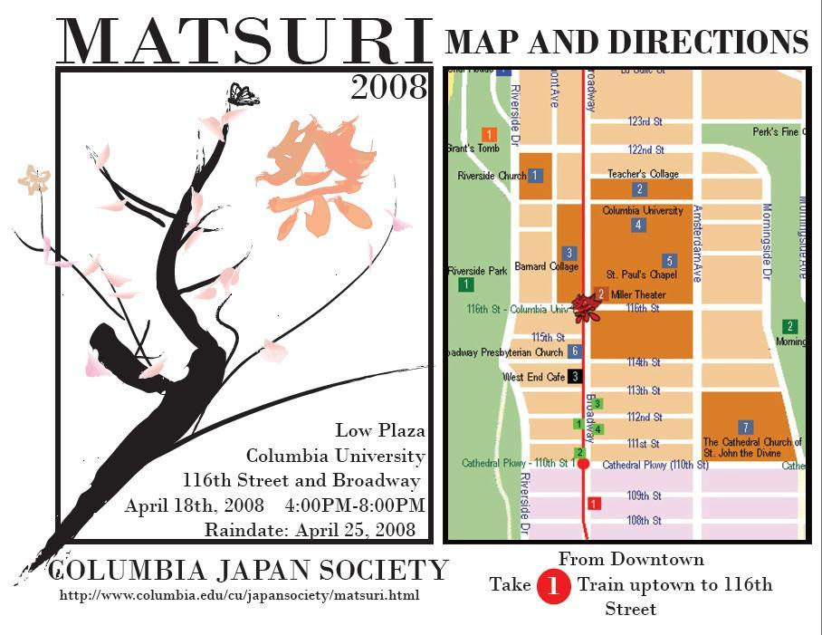

Columbia Japan Society (CJS) of Columbia University in the City of New York (CU) will be holding our annual Japanese festival on the iconic Low Plaza!
Various restaurants, organizations, and perfomers from around New York have been invited, as well as groups within Columbia University. CJS will also be providing our very own entertainment on and off stage.
So come enjoy a wonderful afternoon with us at CJS Matsuri. We are sure you will get a cultural experience as well as some wacky, CJS fun!
